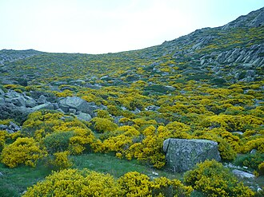

O relevo da Espanha é predominantemente elevado e montanhoso. Possui uma altitude média de cerca de 660 metros, sendo o segundo país mais alto da Europa, atrás apenas da Suíça. O território é caracterizado pelo vasto planalto central (Meseta Central) e por diversas cadeias montanhosas que cortam a península.
O clima na Espanha é predominantemente mediterrâneo e continental, com verões muito quentes (frequentemente acima de 35 graus no sul e centro, e invernos frios. As áreas litorâneas do norte possuem clima oceânico, mais ameno e chuvoso, enquanto as Ilhas Canárias têm clima subtropical estável o ano todo.
A vegetação da Espanha é extremamente diversificada, reflexo de climas variados (atlântico, mediterrâneo e de montanha). A maior parte do país é coberta por vegetação mediterrânea (arbustos, carvalhos, sobreiros), enquanto o norte apresenta florestas temperadas úmidas (faias, carvalhos) e as montanhas possuem coníferas e prados alpinos.

A população atual da Espanha é de aproximadamente 49,3 milhões de habitantes. Este número representa um recorde histórico para o país, impulsionado sobretudo pela chegada de imigrantes, visto que a população nascida no território tem diminuído nos últimos anos.
A Espanha está localizada no sudoeste da Europa, ocupando cerca de 85% da Península Ibérica. Com capital em Madrid, o país faz fronteira a nordeste com a França e Andorra, a oeste com Portugal, e ao sul com o Marrocos (através do Estreito de Gibraltar).